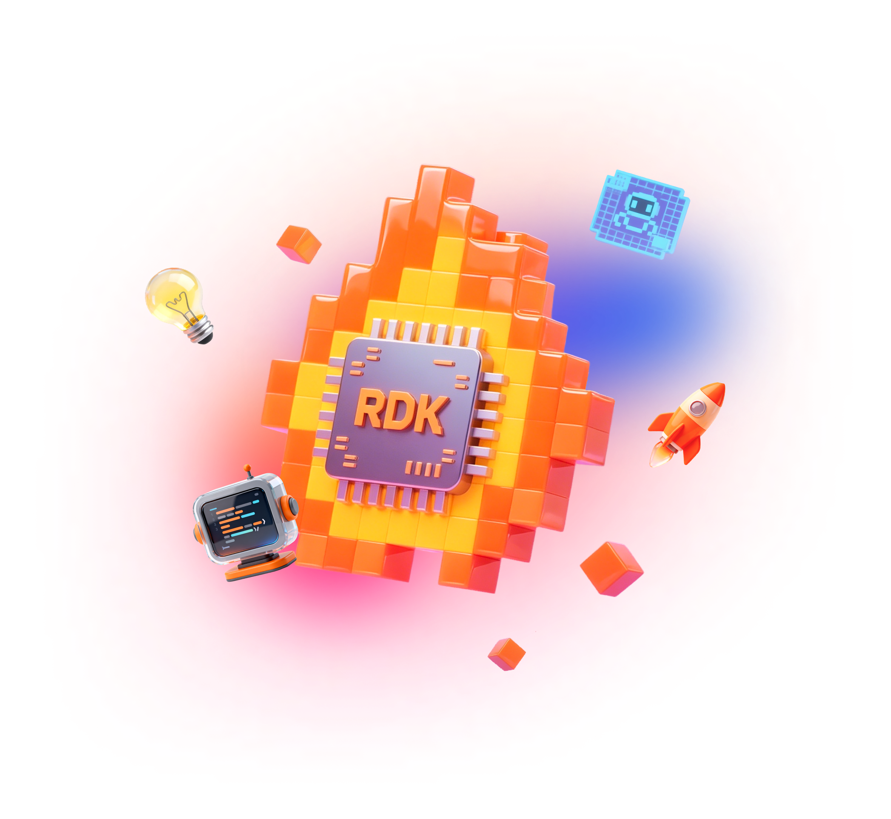
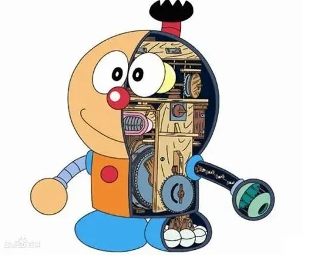
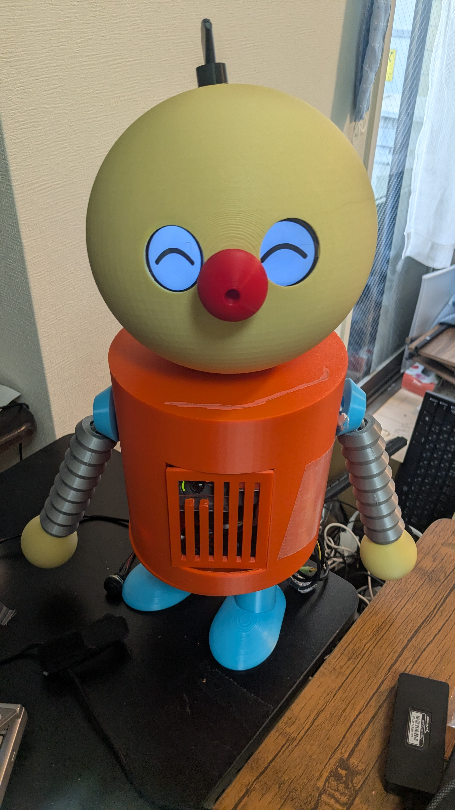
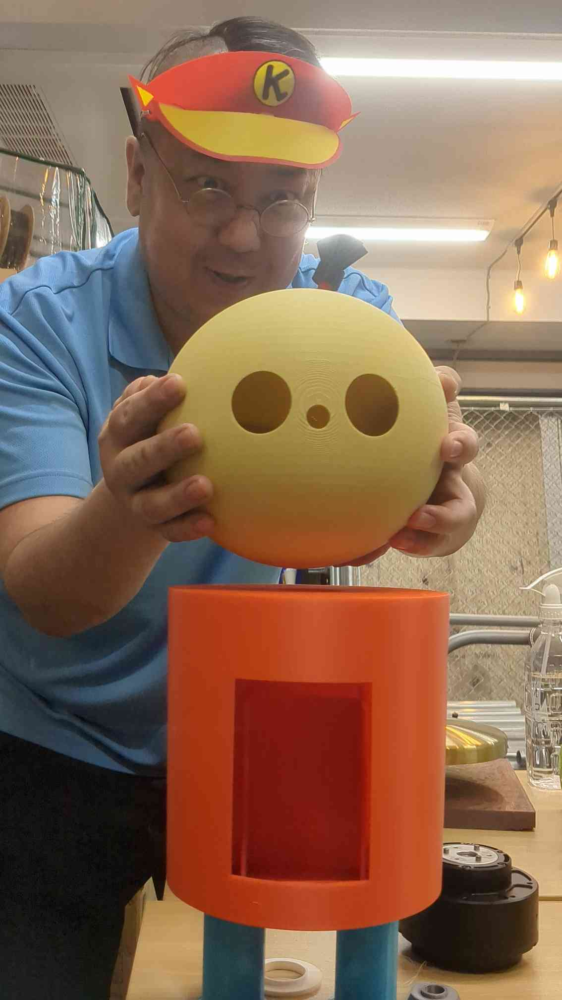
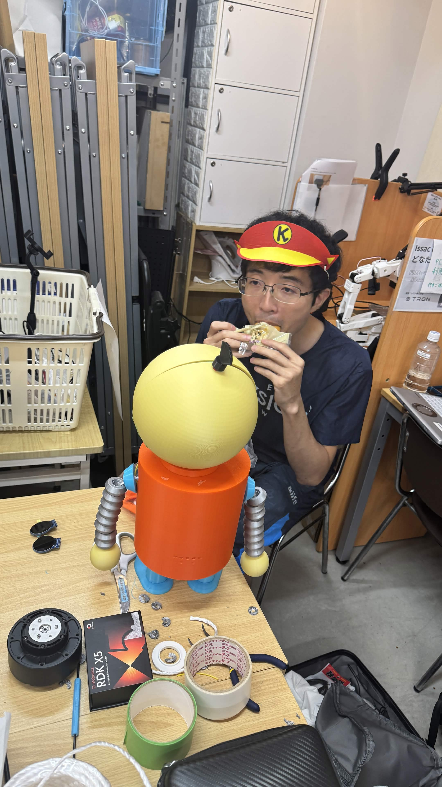
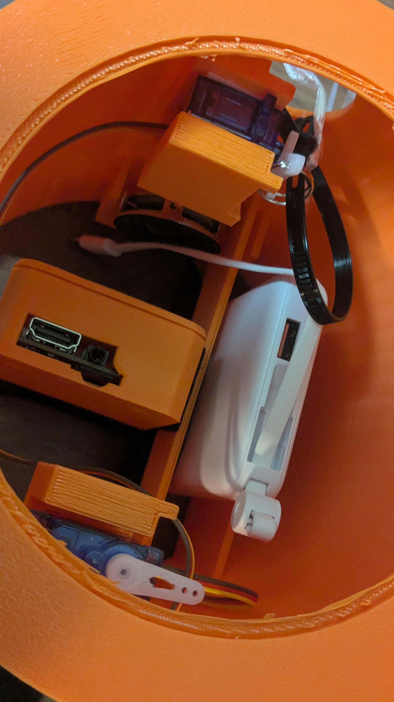

Robotics Dream Keeper Challenge
I am Korosuke!
An era when anyone can build a robot


uecken · my first robot · built by Robostadion (Akihabara, Tokyo)
0:00–0:30
Introduction
A fan-made karakuri robot with an RDK X5 brain
- The partner robot from Kiteretsu Daihyakka (Fujiko F. Fujio)
- Fan-made by Robostadion — brain = one D-Robotics RDK X5
- Mechanics / electronics / software — designed together with AI
- Sees · listens · thinks · talks · emotes — 100% on the board, no cloud
0:30–1:05
Background
"Why not build Korosuke?"
- I'm a wireless engineer — this is my first robot
- Murata-san (owner of Robostadion) invited me
- Saw the Discord → remembered → got the parts → built it!
- Inspired by Disney's Olaf robot & Open Duck Mini


▲ The "head-mounting ceremony" 🎉 — placing his head for the first time
1:05–1:40
Architecture · Hardware
No custom PCB — just simple wiring
RDK X5 at the center (all main functions) · eyes & arms via one ESP32-S3 · servos draw >1 A → separate LiPo · tiny I2S amp → φ50 speaker (for size) · C270 camera = mic · no custom PCB
1:40–2:15
Architecture · Software
One "brain" orchestrates everything
- 👂 Listen — speech → text (STT: SenseVoice)
- 🧠 Think — local LLM (TinySwallow-1.5B) · 5–10 s → "thinking eyes"
- 🗣 Speak — Open JTalk → amp → speaker
- 👀 See — BPU finds people (~20 FPS) → eyes follow you
- 💪 Move — ESP32-S3 → 8 eye emotions + arms
2:15–2:50
Build process
3D print · wire · create with AI
- 3D parts co-created by Murata-san and AI (v1 files in the repo)
- Head = 2 hemispheres · torso holds everything · rope-pull arms (rings + string)
- Wiring — exactly as the repo docs
- Software — created together with AI (I placed parts & debugged)
- Tools: 3D printer · velcro · double-sided tape · string · zip ties
▲ rope-pull arm in action (loop)

2:50–3:30
Afterword
Anyone can build a robot.
This build: 15 h printing + 15 h electronics & software ≈ 30 hours.
With AI — a custom robot in one day, maybe ~5 hours, is within reach!
All open source →
github.com/gurimaruking/corosuke-robot
Now — let's meet him. Korosuke, say hello!
3:30–4:00
Live demo
1 minute with Korosuke
- 「コロすけ！」 → eyes find & follow
- 「こんにちは！元気？」 → thinking eyes (local LLM, 5–10 s) → "〜ナリ!" reply
- Raise a hand → he waves back
- Power button → "good night" → ✕✕ eyes = safe to unplug
Fallback videos: korosuke_demo_10s.mp4 · arm_rope_pull.mp4
ワガハイはコロ助ナリ！ Thank you! 🤖
4:00–5:00
0:00